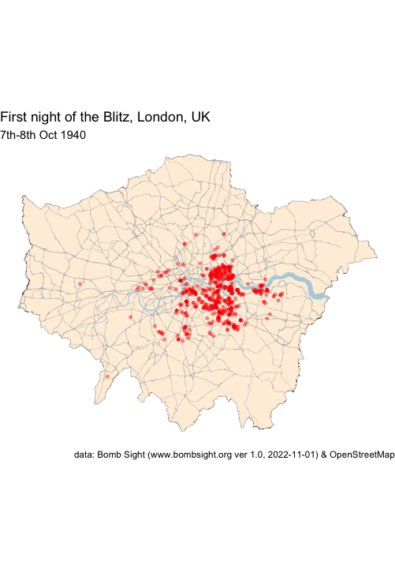

library(sf)
library(ggplot2)
library(dplyr)
library(osmdata)
day_bomb <- read_sf("sit-prod_day_bomb.json")
# get relevant features from OpenStreetMap
town <- 'Greater London'
location <- town %>% opq()
london_bbox <- getbb("greater London", format_out = "polygon")
london_sf <- getbb("greater London", format_out = "sf_polygon")
# different types of streets
main_st <- tribble(
~type,
"motorway",
"trunk",
"primary",
"motorway_junction",
"trunk_link",
"primary_link",
"motorway_link")
st <- data.frame(type = available_tags('highway'))
st <- subset(st, !type %in% main_st$type)
path <- data.frame(type = c("footway","path","steps","cycleway"))
st <- subset(st, !type %in% main_st$type)
path <- tribble(
~type,
"footway",
"path",
"steps",
"cycleway")
st <- subset(st, !type %in% path$type)
st <- as.character(st$type)
main_st <- as.character(main_st$type)
path <- as.character(path$type)
#query OSM
main_streets <- location %>%
add_osm_feature(key = "highway",
value = main_st) %>%
osmdata_sf()
streets <- location %>%
add_osm_feature(key = "highway",
value = st) %>%
osmdata_sf()
water <- location %>%
add_osm_feature(key = "water",
value = c("river")) %>%
osmdata_sf()
rail <- location %>%
add_osm_feature(key = "railway",
value = c("rail")) %>%
osmdata_sf()
#plot map
ggplot() +
geom_sf(data = london_sf, size = 0.1, fill = 'antiquewhite1') +
geom_sf(data = main_streets$osm_lines %>% st_intersection(london_sf),
color = 'grey',
size = 0.15) +
geom_sf(data = water$osm_polygons %>% st_intersection(london_sf),
fill = rgb(178, 210, 221, maxColorValue = 255),
size = 0) +
geom_sf(data = water$osm_multipolygons %>% st_intersection(london_sf),
fill = rgb(178, 210, 221, maxColorValue = 255),
size = 0) +
geom_sf(data = day_bomb%>% st_intersection(london_sf),
color = 'red',
fill = 'red',
size = 1,
alpha = 0.4) +
theme_void() +
labs(
title = "First night of the Blitz, London, UK",
subtitle = "7th-8th Oct 1940",
caption = "data: Bomb Sight (www.bombsight.org ver 1.0, 2022-11-01) & OpenStreetMap"
)30 Days Map Challange - Day 1 - Points
I surely won’t be able to participate to the 2022’s #30DaysMapChallenge but while porting my website to Quarto I got to re-read my 2012’s blog entry and thought that dataset could be a good one to use for at list the first day of the challenge.
This post will describe what I did using R and ggplot2, but I will also add a rendering of it using Observable.
Data
I knew that since my 2012 post the Sight Bombing project in the meantime grew a website and even an Android app. So I tried to find the relevant data serving the front-ends; I even contacted via email Dr Catherine Jones (the project director at the time) but then I realized there is a geo server where to get the data from.
There are 3 files for the Blitz bombing:
- First 24 hours of the Blitz (7th September 1940) sit-prod_day_bomb.json (536KB)
- Week of 7th to 14th October 1940 sit-prod_week_bomb.json (1.0B)
- Between 1940-10-07 and 1941-06-06 sit-prod_agg_bomb.json (17MB)
ggplot2 version
